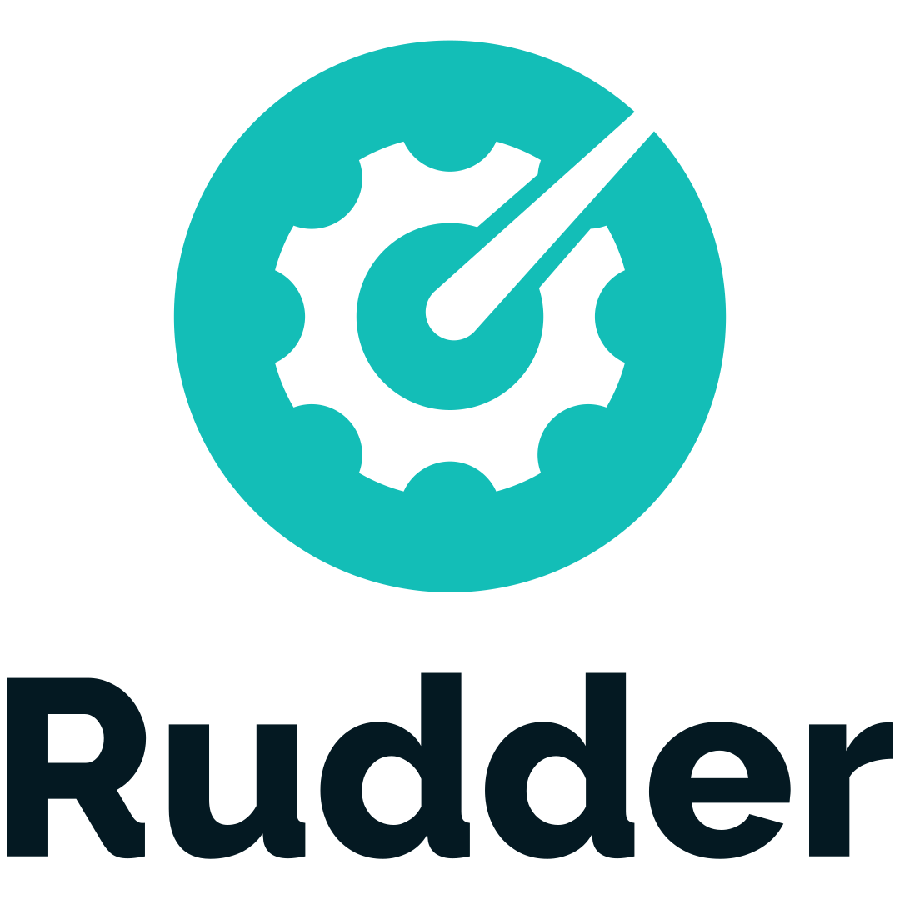

Alexis Mousset
I'm a system engineer, working on open-source infrastructure software. I do system programming in Rust (and sometimes C), and Linux system management (packaging, server administration, containers, observability, etc). I'm also interested in documentation and UX topics.
projects
RUDDER - since 2015
I'm currently employed at RUDDER, building system automation tools. The parts of the project I mainly work on are:
- relayd: A network daemon (built in Rust with tokio), the backbone of Rudder's agent-server communication.
- documentation: Documentation platform for Rudder, including manuals, tutorials and API docs
- configuration agent and policies: Configuration agent for Unix systems, and the configuration policies library
lettre - since 2014
An email client for Rust programs allowing easily sending emails from Rust applications by providing pluggable transports and strongly typed modern email features.
other contributions
- darktable: image processor, did small UI improvements and bugfixes